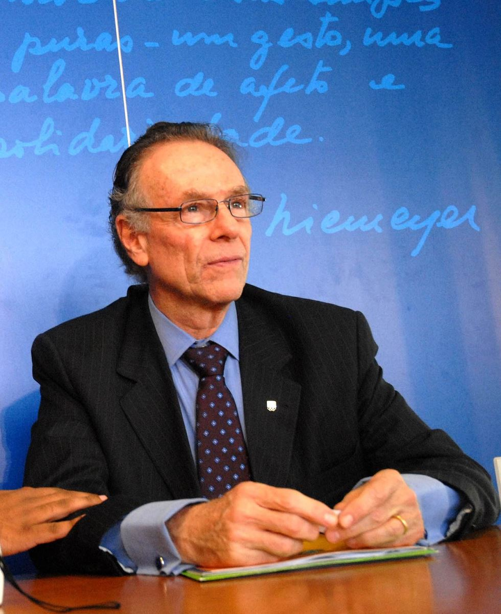

Carlos Arhtur Nuzman

Vào 18 giờ 30 phút ngày 2 tháng Mười năm 2009, ông Carlos Arthur Nuzman nhận được một tin đã khiến ngày hôm đó trở thành một trong những ngày hạnh phúc nhất cuộc đời ông: Rio de Janeiro chính thức được chọn là thành phố đăng cai tổ chức Thế vận hội Olympic 2016. Tại Copenhagen (thủ đô của Đan Mạch), ngay khi kết quả được công bố, nhóm của Nuzman đã mừng rỡ nhảy cẫng lên, ôm chầm lấy nhau, tay giơ cao quốc kỳ Brazil, rồi òa khóc trong niềm vui sướng tột độ.
Với bộ đồng phục màu xanh dương sẫm và áo khoác blazer xanh lá nhạt, đoàn ứng cử viên của Brazil đã trải qua rất nhiều khó khăn để đến được chiến thắng của ngày hôm ấy. Trong đó có cả việc Tổng thống Barack Obama đã viết thư gửi tới Ủy ban Olympic Quốc tế (IOC) để ủng hộ thành phố ứng cử viên cạnh tranh là Chicago. Tổng thống Obama cùng với phu nhân Michelle, ngôi sao truyền hình Oprah Winfrey và Thị trưởng thành phố Chicago Richard Daley đã bay tới Copenhagen để ủng hộ cho thành phố Chicago trong cuộc chạy đua bình chọn thành phố đăng cai Thế vận hội Olympic 2016. Nhưng Chicago đã bị loại trong vòng bỏ phiếu đầu tiên trên tổng cộng ba vòng.
Trong vòng đầu, Brazil thua thành phố Madrid hai phiếu, tỷ số là 28-26. Đến vòng thứ 2, Tokyo bị loại và trong vòng cuối cùng, Brazil đã đánh bại Madrid với tỷ số quyết định là 66-32, một chiến thắng với tỷ lệ cách biệt xa nhất trong lịch sử các kỳ Olympic. Khi số phiếu bình chọn được công bố, Nuzman – người đứng đầu Ủy ban Olympic Quốc gia Brazil và là trưởng đoàn tham gia tranh cử vị trí chủ nhà cho Rio 2016 – đã nhảy cẫng lên và hét lớn: “Chúng tôi đã làm được rồi!”
Trở thành nước chủ nhà của sự kiện thể thao lớn nhất thế giới là một dự án đầu tư mạo hiểm điển hình của Brazil. Việc này đòi hỏi Brazil phải xây dựng ngân quỹ, có kế hoạch, chiến lược kinh doanh thông minh và thiết lập một đội ngũ làm việc xuất sắc để cạnh tranh với các đối thủ hùng mạnh – những người khát khao vị trí nước chủ nhà Olympic chẳng kém gì Brazil.
Đối với Nuzman, cựu ngôi sao bóng chuyền Đội tuyển quốc gia Brazil rồi sau này là luật sư và doanh nhân, chiến thắng tại Copenhagen là thành quả của chặng đường nỗ lực mười năm của ông. Nó cũng là điểm kết cho những ám ảnh của tai họa xảy ra năm ông 10 tuổi. Hôm đó là một ngày Chủ nhật năm 1952, bà Esther, mẹ của ông đã bật một que diêm để khởi động bình nước nóng trong phòng tắm và khiến nó phát nổ. Lửa bùng cháy dữ dội, bao trùm cả cơ thể bà Esther.
Khi ấy, cậu bé Nuzman nghe thấy tiếng thét của mẹ, vội chạy sang và nhìn thấy bà như ngọn đuốc đang bốc cháy. Ông Izaac, cha của Nuzman vội chạy vào phòng tắm, lấy chăn trùm lấy cơ thể mẹ Nuzman và đưa bà đến thẳng bệnh viện. Tám ngày sau, bà qua đời. “Cha của tôi tới bên cạnh tôi và chị gái rồi nói rằng chuyện gì phải đến đã đến, mẹ đã mất”, Nuzman nhớ lại. “Tôi không bao giờ được gặp lại bà nữa. Điều tôi nhớ về bà là hình ảnh một ngọn đuốc sống.”
Sau đó, Nuzman đã tìm sự an ủi trong thể thao. Ông yêu thích môn bóng chuyền và chơi rất giỏi. Cha và bà nội Anita đã đưa ông tới một câu lạc bộ bóng chuyền. Ở đó, Nuzman học được kỹ thuật về môn bóng chuyền – một trong những môn có tính cạnh tranh cao. Năm 17 tuổi, ông trở thành tay chơi chính trong Đội tuyển của thành phố Rio de Janeiro và ba năm sau ông được tham gia thi đấu cho Đội tuyển Quốc gia trong giải vô địch thế giới tại Liên Xô. Khi bộ môn này trở thành một môn thi trong Thế vận hội Olympic năm 1964 được tổ chức ở Tokyo, Nhật Bản, Nuzman thi đấu cho Đội tuyển Brazil. Hai năm sau, có mặt trong Đội tuyển Quốc gia thi đấu tại giải bóng chuyền thế giới ở Tiệp Khắc.
Thể thao đã thay đổi cuộc đời của Nuzman, giúp ông có sự tự tin để vượt qua nỗi đau buồn và tìm được mục đích sống. Ông chia sẻ: “Cuối cùng tôi đã có thể làm chủ cuộc đời mình. Tất cả những nỗi sợ hãi trong tôi kể từ sau sự ra đi của mẹ không còn nữa. Thái độ và cảm xúc của tôi đã thay đổi. Tôi trở thành một luật sư. Tôi cũng từng phục vụ một năm trong quân ngũ. Đó là một điều rất ý nghĩa đối với tôi.”
Năm 1972, ông đã kết thúc sự nghiệp thể thao của mình nhưng ông vẫn rất đam mê thể thao và tích cực tham gia trong lĩnh vực này. Từ đó, ông giữ chức Chủ tịch Liên đoàn Bóng chuyền thành phố Rio de Janeiro. Đến năm 1975 ông trở thành Chủ tịch Liên đoàn Bóng chuyền Brazil. Trong ngày nhậm chức, Nuzman tuyên bố mục tiêu của ông là mang về cho Brazil chiếc Huy chương Vàng Olympic của bộ môn bóng chuyền – điều mà nhiều người cho là không tưởng.
Lúc đó, đội bóng chuyền nam của Brazil xếp hạng 13 trên toàn thế giới. Khi đội bóng chuyền Nhật Bản đăng quang tại Thế vận hội, Nuzman đã mượn ý tưởng tập luyện của họ để áp dụng cho đội bóng chuyền nam Brazil. Ngày nào họ cũng luyện tập tám tiếng đồng hồ. Họ được dạy rằng mục tiêu chiến thắng quan trọng hơn bất cứ điều gì trong đời. Năm 1976, Brazil đứng thứ bảy trong kỳ Thế vận hội ở Montreal, đứng thứ năm vào năm 1980 ở Thế vận hội Moscow. Năm 1984, Brazil giành được Huy chương Bạc tại Thế vận hội Los Angeles và đến năm 1992, họ đã mang về tấm Huy chương Vàng tại Thế vận hội ở Barcelona và giành thêm tấm Huy chương Vàng thứ hai trong kỳ Thế vận hội 2004 tại Athen.
Không chỉ mang về chiếc Huy chương Vàng cho Đội tuyển Brazil, Nuzman còn trở thành một nhà vận động tích cực cho thể thao. Trong nhiều năm, ông đã vận động hành lang thành công để kênh truyền hình hàng đầu quốc gia phát sóng những trận thi đấu bóng chuyền quan trọng. Bằng cách tổ chức giải đấu giao hữu tại Rio năm 1993, ông đã thuyết phục Ủy ban Olympic Quốc tế[53] và Ủy ban Tổ chức Olympic tại Atlanta đồng ý đưa môn bóng chuyền bãi biển vào danh sách các môn thi đấu. Nhờ những nỗ lực không ngừng của ông, môn bóng chuyền trở nên phổ biến tại Brazil. Ngày nay, tại Brazil, bóng chuyền là môn thể thao được yêu thích thứ hai, chỉ đứng sau bóng đá.
Để mang được Thế vận hội Olympic về cho Brazil, Nuzman đã phải di chuyển hơn 800 nghìn km với hơn một nghìn giờ bay và cùng đội của mình chuẩn bị bộ hồ sơ đấu thầu dày 568 trang. Trong suốt thời gian này, ông luôn nhận được sự ủng hộ của vợ, bà Marcia Pletier. Ông bà kết hôn từ năm 1998, nhưng ông tin rằng hai người đã biết nhau từ kiếp trước và bà đã thay đổi toàn bộ cuộc đời ông.
Trong buổi đấu thầu ở Copenhagen, ông đã khéo léo trình bày bản đồ thế giới thể hiện các nước đã đăng cai Thế vận hội từ năm 1896. Trên tấm bản đồ này, mọi người nhận ra rằng không có tên của bất kỳ quốc gia Nam Mỹ nào cả.
Nuzman đã phát biểu với thành viên của IOC: “Châu Âu đã đăng cai 33 lần; Bắc Mỹ 12 lần, trong đó Mỹ đăng cai 8 lần; châu Á 5 lần và châu Úc 2 lần. Đã đến lúc dành cơ hội cho Nam Mỹ. Khi các anh nhấn nút bình chọn của mình ngày hôm nay, các anh sẽ tiếp thêm động lực cho cả một châu lục. Hãy bỏ phiếu cho Rio và chúng tôi sẽ mở ra cánh cửa cho hơn 180 triệu thanh thiếu niên đầy lòng nhiệt huyết ở Nam Mỹ. Chúng tôi đã sẵn sàng để phục vụ và tạo ra lịch sử.”
Nuzman chịu trách nhiệm đảm bảo sự thành công của kỳ Thế vận hội. Ông điều hành một tổ chức với ngân sách 2,8 tỷ đô-la. Chính phủ Brazil sẽ chi 11,6 tỷ đô-la cho địa điểm và cơ sở hạ tầng để thành phố Rio de Janeiro sẵn sàng cho sự kiện này. Sự kiện này có tầm ảnh hưởng rất lớn đối với nền kinh tế của Brazil. Ước tính cho thấy kỳ Thế vận hội 2016 sẽ mang lại 5,11 tỷ đô-la, bao gồm việc tạo ra 120 nghìn công ăn việc làm mỗi năm từ thời điểm năm 2009 cho đến năm 2016 và sau đó là 130 nghìn việc làm mỗi năm cho tới năm 2027.
Ông đã phải làm những gì để giành được quyền đăng cai Olympic?
Chúng tôi đã mất mười năm chuẩn bị, bắt đầu từ tháng Mười hai năm 1999. Ủy ban Thế vận hội của Brazil quyết định không tham gia đăng cai năm 2008, thay vào đó sẽ tham gia đăng cai Đại hội thể thao Pan American Games để chứng tỏ với thế giới chúng tôi có thể tổ chức được sự kiện. Đây là sự kiện thể thao nhiều môn lớn thứ hai trên thế giới. Chúng tôi đã đánh bại thành phố San Antonio ở bang Texas để mang sự kiện này về Brazil. Chúng tôi biết đây sẽ là nền móng để chúng tôi đăng cai Olympic. Chúng tôi cho mọi người thấy cách làm việc hiệu quả và tuân thủ cách làm việc ba cấp (liên bang, bang và thành phố). Cuối cùng, Chủ tịch của Tổ chức Đại hội thể thao châu Mỹ (Pan American Games) và truyền thông quốc tế đã kết luận: Chúng tôi đã tổ chức kỳ đại hội thành công nhất.
Chúng tôi làm việc cả đêm lẫn ngày trong chiến dịch đăng cai Olympic. Chúng tôi đăng ký lần đầu năm 2004 cho kỳ Thế vận hội 2012 nhưng không có đủ điều kiện để chiến thắng. Chúng tôi không được chọn vào danh sách đấu thầu nhưng lúc đó tôi đã thể hiện với IOC ý định đăng cai cho kỳ Thế vận hội 2016 và nói với họ chúng tôi sẽ chiến thắng.
Tôi nói với người trong đội của mình những điều tôi từng nói với các vận động viên: chúng ta cần có liều hoóc-môn Adrenalin của những vận động viên đỉnh cao của thế giới. Anh cần khiêm tốn nhưng phải có đủ lòng dũng cảm, tự trọng và niềm tin nội tại rằng anh có thể thắng. Anh không bao giờ được nghĩ rằng mình kém hơn bất kỳ vận động viên nào, hay một đội nào trên thế giới. Anh cần có triết lý của người thắng cuộc và phải tin rằng anh sẽ là người chiến thắng.
Chúng tôi làm việc không có ngày nghỉ. Đội chúng tôi có tổng cộng 500 người từ ba cấp quyết định (liên bang, bang và thành phố) cùng làm hồ sơ đấu thầu. Tôi đã nói với các thành viên trong đội rằng tôi không cần thuê các chuyên gia vận động hành lang và chúng tôi cần được công nhận là đội có màn thể hiện xuất sắc nhất trong tất cả các quốc gia muốn được đăng cai sự kiện này. Năm 2008, chúng tôi được chọn vào danh sách rút gọn. Thành phố đầu tiên là Tokyo, rồi đến Madrid, Chicago và Rio đứng thứ tư. Mọi người đều nói: “Các anh không có cơ hội đâu. Các anh sẽ đứng ở vị trí cuối cùng.”
Nhưng tôi đã nói với đội của mình đây là kết quả mà chúng ta chưa từng bao giờ dám mơ tới. Chúng tôi di chuyển vòng quanh thế giới và thể hiện bản thân với các thành viên của IOC. Họ đã nhìn thấy những luận điểm tốt của chúng tôi. Brazil là nền kinh tế lớn thứ tám của thế giới và Nam Mỹ chưa bao giờ được đăng cai tổ chức Thế vận hội.
Có hai thời điểm rất quan trọng. Tháng Ba năm 2009 tại Denver, bang Colorado của Mỹ, chúng tôi có cuộc họp với tất cả các liên đoàn thể thao quốc tế, các thành viên của IOC và báo chí quốc tế. Khi chúng tôi đang chuẩn bị bài diễn văn ở Boulder, một hôm tôi tỉnh dậy với ý tưởng sẽ vẽ ra một bản đồ Olympic. Tấm bản đồ này sẽ là vũ khí quan trọng trong chiến dịch của chúng tôi. Nó thể hiện tất cả các lục địa đã từng tổ chức Thế vận hội ngoại trừ Nam Mỹ và châu Phi. Chỉ tính riêng ở Nam Mỹ đã có 180 triệu thanh niên dưới 18 tuổi và riêng Brazil đã có đến 65 triệu người trong số đó. Họ đại diện cho 1/3 dân số đất nước. Kỳ Thế vận hội sẽ truyền cảm hứng cho họ. Bằng cách thể hiện tất cả những điều đó trên một tấm bản đồ, tôi tin nó sẽ trở thành một vũ khí hiệu quả để khẳng định rằng đã đến lúc trao cơ hội cho Nam Mỹ.
Thời khắc quan trọng thứ hai là khi IOC quyết định sẽ có một buổi trình bày kỹ thuật dựa trên thành tích của các nước tham gia tranh cử. Chúng tôi từng làm việc này vào tháng 6 năm 2009 ở Lausanne, Thụy Sĩ. Tất cả các thành viên đều nói Rio sẽ là thành phố chiến thắng nếu tổ chức yêu cầu bình chọn ngay lúc đó. Chúng tôi giữ vững đà tiến của mình. Chúng tôi tiếp tục làm việc và có được sự ủng hộ của tổng thống Brazil, thống đốc bang và thị trưởng thành phố Rio. Tất cả mọi người đều đoàn kết với chúng tôi.
Tôi đã gặp tất cả các thành viên của IOC ít nhất năm lần để giải thích về dự án tổ chức và lý do chúng tôi muốn đăng cai tổ chức Thế vận hội. Chúng tôi đã ước lượng kết quả bỏ phiếu và một tuần trước khi buổi bỏ phiếu thật sự diễn ra ở Copenhagen, chúng tôi đã viết rằng Rio sẽ thắng Madrid với tỷ số 67-33. Kết quả chung cuộc chúng tôi thắng với tỷ số 66-32.
Vì sao ông có thể dự đoán được kết quả sít sao như vậy?
Chúng tôi hiểu khi anh chạy một chương trình vận động mang yếu tố chính trị, anh phải làm việc trên cơ chế phiếu bầu. Trong trường hợp của chúng tôi, một nhóm các nước chắc chắn sẽ ủng hộ chúng tôi và chúng tôi bắt đầu với nhóm này, tập trung trước hết ở các nước Mỹ La-tinh và châu Phi. Chúng tôi nghĩ Chicago sẽ có được sự ủng hộ của khối các nước nói tiếng Anh; Madrid có được một số phiếu bầu của châu Âu và Tokyo có phiếu của các nước châu Á. Tôi trao đổi với rất nhiều thành viên của IOC và một vài người trong số họ nói: “Vâng, tôi sẽ bầu cho Rio.” Từ những cuộc trò chuyện như vậy, chúng tôi hiểu rằng Chicago và Tokyo sẽ không nhận được nhiều sự ủng hộ.
Mỗi đất nước cần có một doanh nhân tài ba để có thể thành công trong quá trình tranh cử và giành quyền đăng cai Olympic. Ông chính là một người như thế. Ông có thể chia sẻ một chút về những điều ông đã học hỏi được trong suốt quá trình này không?
Thứ nhất là phải có sự hợp tác. Anh phải làm việc với ba cấp chính quyền gồm có liên bang, bang và thành phố. Họ phải trở thành đối tác và bạn bè của anh trong một sự kiện như thế này. Anh phải tập hợp được tinh thần dân tộc của tất cả mọi người. Anh phải cởi mở và trung thực. Anh cần tôn trọng mọi người và không được nghĩ rằng anh xuất sắc hơn người khác, bất kể thành phố và đất nước của anh có vị thế như thế nào. Anh cần tỏ ra rõ ràng và cởi mở để có thể đưa ra dự án tốt vì anh không thể thắng chỉ bằng con đường chính trị.
Anh cần cả cuộc đời để chuẩn bị cho những thời khắc quan trọng. Tôi đã được trao nhiều cơ hội trong cuộc đời và cứ thế từng bước trưởng thành. Tôi không có một đặc ân nào khác. Vào những thập niên 1970, 1980, ở Brazil không có trường đào tạo công chức làm việc trong lĩnh vực thể thao nhưng tôi đã cố gắng ghi chép lại tất cả những gì tôi quan sát được. Tôi học theo những điều tốt từ những người truyền cảm hứng cho tôi. Sau khi mẹ tôi qua đời, tôi vẫn có sự hỗ trợ từ gia đình. Nhưng tôi cần rất nhiều sự tự tin, vì vậy tôi đã quan sát cách mọi người làm việc và chuẩn bị cho thành công. Là một người làm việc trong lĩnh vực thể thao, không có ai dạy tôi thế nào là đúng hay sai. Tôi chỉ tự quan sát và học hỏi.
Tôi luôn phải thể hiện tính chuyên nghiệp. Anh cần có khao khát và kỹ năng để hoàn tất mọi việc. Tôi luôn phấn đấu để nâng cao chất lượng lên một tầm cao mới. Tôi thích các thách thức và đây là một trong những thử thách lớn nhất cuộc đời tôi.
Ông cảm thấy thế nào khi chiến thắng?
Tôi cảm thấy tràn đầy sức sống hơn bao giờ hết. Đó là cảm giác đầu tiên. Tôi cảm thấy hạnh phúc vì đã về đích cùng với tấm huy chương vàng - một chiến thắng quan trọng nhất trong cuộc đời tôi. Chúng tôi đã luôn tập trung và không để cảm xúc lấn át bản thân. Nhưng đó là trải nghiệm thật sự xúc động vì giấc mơ thành sự thật. Tất cả đều bật khóc. Tôi không khóc nổi vì đã tập trung vào chuyện này trong một thời gian quá lâu rồi. Bình thường tôi là người dễ khóc nhưng trong khoảnh khắc đó thì không. Tôi đã nghĩ tới những người trẻ ở Brazil. Họ sẽ có cơ hội được truyền cảm hứng bởi sự kiện này và điều đó sẽ nâng cao chất lượng con người ở đất nước của chúng tôi.
Giờ đây ông có nhiệm vụ lớn lao là thực hiện kế hoạch đăng cai. Ông có lo lắng nhiều về khả năng Brazil có thể tổ chức một kỳ Thế vận hội thành công không?
Tôi có niềm tin rất lớn rằng tôi có khả năng dẫn dắt đội ngũ nhân sự mà chúng tôi cần để tổ chức kỳ Thế vận hội này. Tháng Tám năm 2011, chúng tôi có 170 người trong Ban tổ chức. Vào cuối năm 2011, chúng tôi đã có 260 người. Năm 2016, đội ngũ nhân sự lên đến bốn nghìn người, cùng với nhiều nhóm chuyên viên khoảng 35 nghìn người và 90 nghìn tình nguyện viên. Tôi đã sẵn sàng. Chúng tôi tự tin với quá trình chuẩn bị hiện tại. Tôi không nghi ngờ gì khả năng chúng tôi sẽ tổ chức một kỳ đại hội tuyệt vời và ngoạn mục cho Rio và cho đất nước Brazil[54].
Chúng ta cần làm những gì để có một đội ngũ làm việc hiệu quả?
Anh phải chắc chắn rằng mình có một đội ngũ nhân viên với kỹ năng, kiến thức nền tảng và quan điểm đa dạng. Anh có thể phân tầng quản lý; đó là điều cần thiết nhưng các nhà quản lý cần phải là những người biết truyền cảm hứng và làm gương. Quá trình chuẩn bị nhân sự cho nhóm làm việc cần đảm bảo rằng tất cả thành viên có chung mục đích, tầm nhìn và tất cả đều phải hướng tới kết quả của dự án. Sự tận tụy và chăm chỉ là những yêu cầu bắt buộc phải có.
Truyền thông nội bộ và cơ chế khen thưởng cho việc hoàn thành tốt mục tiêu cũng là các cách hiệu quả để đảm bảo nhóm làm việc luôn có động lực để hoạt động. Mọi người cần cảm thấy tự hào khi đạt được thành quả đồng thời họ cũng muốn cảm thấy mình là một phần trong thành công chung của cả tổ chức. Các nhân viên cũng cần được trao cho các cơ hội đào tạo để có thể phát triển bản thân.
Tôi đoán rằng nếu có một điều ước, ông sẽ mong mẹ của mình nhìn thấy cảnh này. Có đúng như vậy không?
Kể từ khi bà qua đời, tôi đã luôn cầu nguyện cho bà hằng đêm và tôi cảm thấy bà luôn ở bên cạnh tôi. Cha tôi mất năm 1988 và chị gái của tôi cũng ra đi vào năm 1993. Bà của tôi trở thành người mẹ thứ hai trước khi bà qua đời năm 1999 ở tuổi 95. Tôi đã gặp rất nhiều khó khăn trong cuộc đời mình. Khi môn bóng chuyền đến với tôi, tôi đã có thêm sức mạnh để tiếp tục tiến lên. Cuộc đời đã rèn luyện để tôi trở nên mạnh mẽ hơn khi đương đầu với các khó khăn.